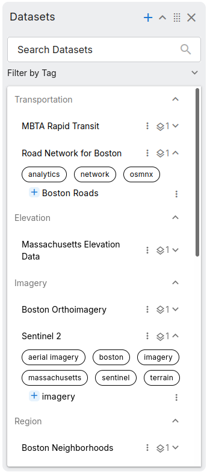
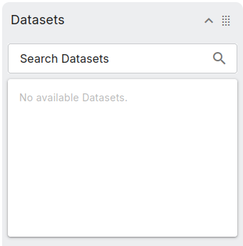
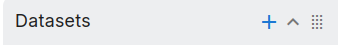
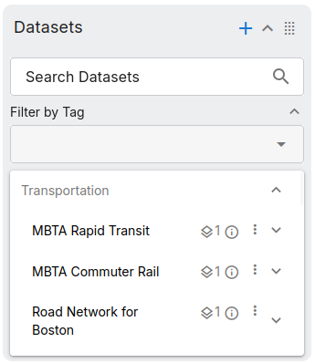
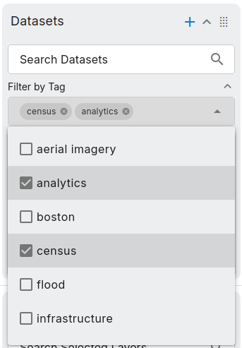
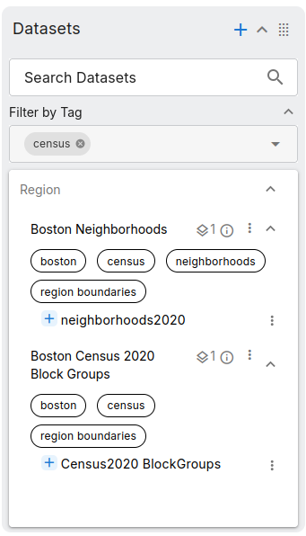
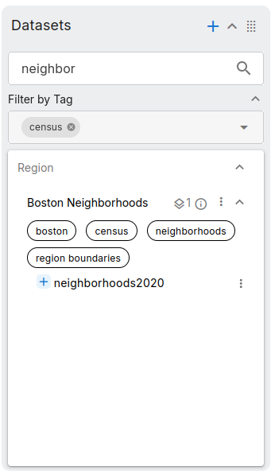
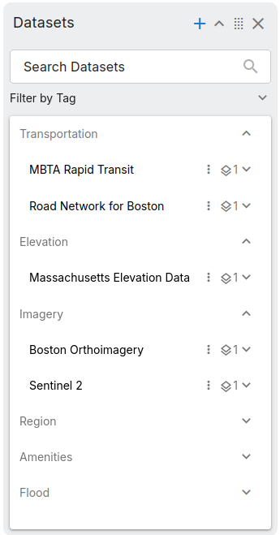
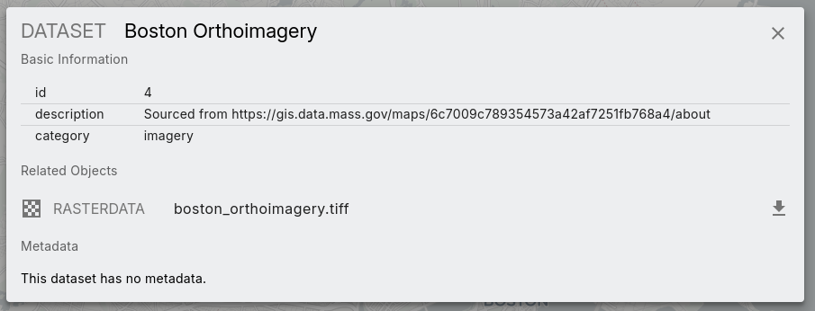
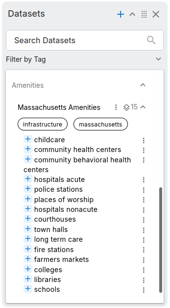

Introduction
The Datasets panel provides a list of all the datasets included in the current project, organized by category. Each category is an expandable section with a list of datasets. Each dataset is an expandable section with a list of layers. Clicking on any layer in the Datasets panel will add that layer to the map, as well as the Selected Layers panel for further configuration. This guide will explain the features available in the Datasets panel so you can explore the contents of your project.

Basic Controls
The main content of the Datasets panel is a hierarchical list of your current project’s contents. If you do not have a project selected, this panel’s list will be empty, and some controls will be invisible. The only visible controls will be the common controls present on every panel (see Panels). This includes an expand/collapse icon, a drag handle for repositioning the panel, and a basic search box.

Once you select a project at the top of the left sidebar (see Project Configuration), the Datasets panel will update. Even if the selected project does not contain any datasets, the Datasets panel will show an additional control once a project has been selected. A blue plus button will appear in the header of the panel. Once clicked, that button will open the Project Management interface for the selected project, where you can add new datasets to the project (either by selecting existing datasets or creating new ones). You can also open the Project Management interface with the buttons next to the project selection box.
Note
If you are not logged in, you will not have access to the project management interface, so the blue plus button will not appear.

Once the selected project contains at least one dataset, another control will become visible below the basic search box. You can expand the “Filter by tag” section to show a tag selection box.

The tag selection box, when clicked, will open a menu listing the tags on all the datasets in the project. You can select multiple tags. Once a tag is selected, it will appear as a chip in the filter input. Each chip has an “X” button on the right, which, when clicked, will deselect that tag.

When tags have been selected, the list of datasets shown in the Datasets panel will be filtered. Only datasets with matching tags will be shown. A dataset’s tags are shown as a list of chips under the dataset’s name when the dataset section has been expanded.

The tag filters can be used in combination with the search filter to further narrow down the results.

Dataset List Structure
As stated in the introduction above, the dataset list has a hierarchical structure. At the top level are categories. These expandable sections contain datasets. In the screenshot below, the list shows the following top-level categories: transportation, elevation, imagery, region, amenities, and flood. Each category is displayed as a name and an up/down arrow indicating the expansion status of the category. The transportation, elevation, and imagery categories are expanded, each showing one or more datasets in that category. Each dataset is shown as a name, a set of icons, and an up/down arrow indicating the expansion status of the dataset.

The following icons are shown next to each dataset name:
-
A vertical three dots icon which, when clicked, opens a detail dialog. This dialog will display a table of basic information about the dataset, a list of related objects, and a table of metadata.
a. Each item in the related objects list, when clicked, will show the details dialog for that related object.
b. Downloadable items show a download icon; this icon will display a tooltip with the file size when the cursor hovers over it. Clicking the download icon will initiate a download of that file.

-
A layers icon followed by a number indicating the number of layers the dataset has.
- An expansion arrow that points down if the dataset has not been expanded and points up if it has been expanded.
When expanded, a dataset will also display the list of tags and the list of layers. Tags are shown as rounded chips, and Layers are shown as rows containing a blue plus button, the layer name, and a vertical three dots icon (which opens a similar details dialog when clicked). When the blue plus button is clicked, the layer will be added to the map and shown in the Selected Layers panel. You can add the same layer multiple times; numbered copies will appear in the Selected Layers panel, and you can apply different styles to each copy in that panel. See the Selected Layers Panel documentation for details.
